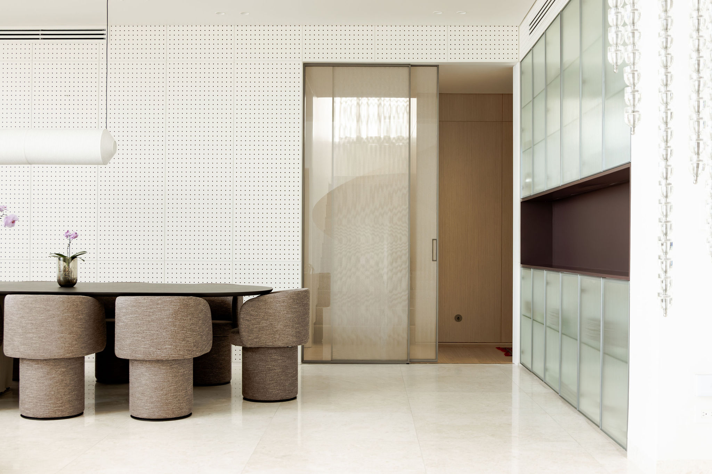
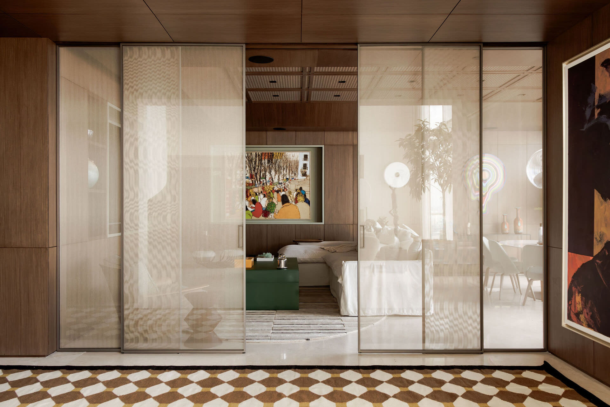
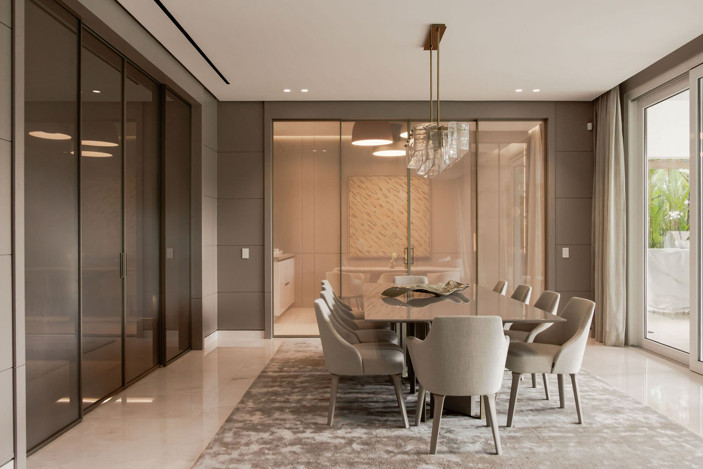
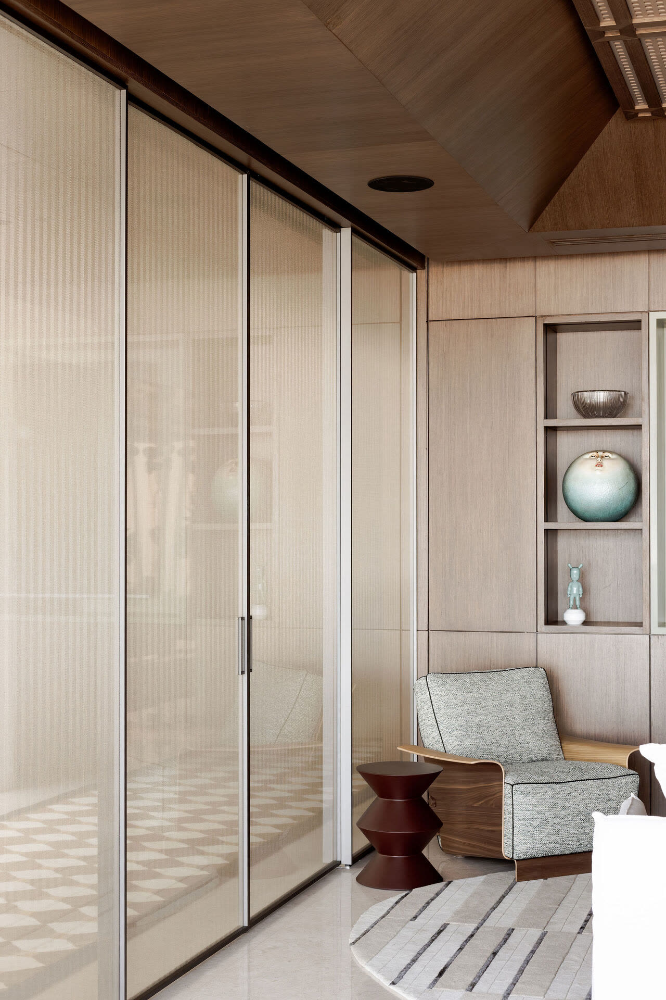
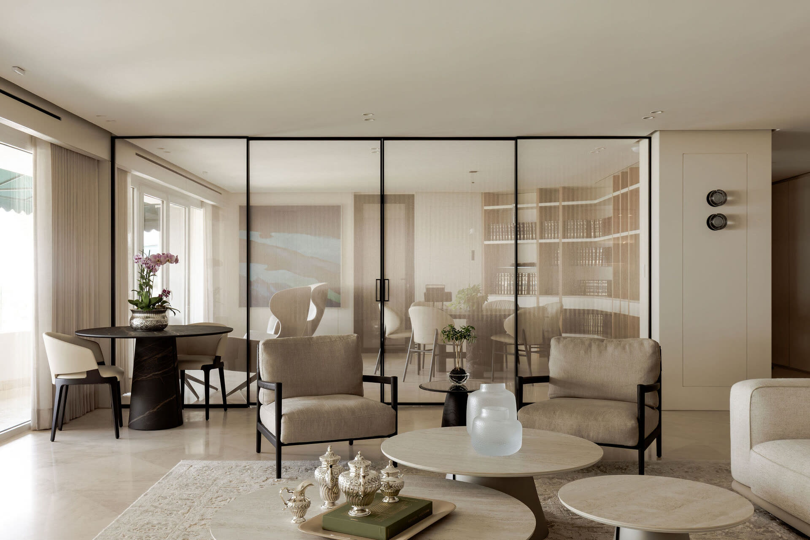

Separación
sin interrupción
Sistemas de vidrio corredizo de alta gama, a medida para cada espacio.

Sistemas GLSS
Siete configuraciones de puertas corredizas de vidrio, fabricadas a medida para cada proyecto.
Acabados

No encontramos acabados para esa búsqueda.
02 // Nuestros sistemas
Soluciones arquitectonicas de vidrio

GLSS01 — GLSS02
Apertura mínima
1 o 2 paneles. Para cierres discretos y divisiones de espacio compactas.
Ver GLSS01 y GLSS02 →
GLSS03 — GLSS04
Apertura amplia
3 o 4 paneles. Para grandes luces, salones y conexiones interior-exterior.
Ver GLSS03 y GLSS04 →
GLSS05 — GLSS07
Sistema pocket
Los paneles desaparecen en el muro. Apertura total sin obstrucción visible.
Ver GLSS05 y GLSS07 →
GLSS08 · Próximamente
Gran formato
4 paneles en pocket. El sistema más ambicioso de la línea — para vanos de gran escala.
Ver todos los sistemas →
03 // Sistema destacado
GLSS02
Puerta Bipanel
Configuración
1 fijo + 1 corredizo
Dimensiones
2000×3000 / 2500×2600 mm
Perfil
Aluminio slim anodizado
Mecanismo
Soft close
Vidrio
8mm laminado
Colores de perfil
04 // Proyectos
Instalaciones que definen espacios

Residencia Costa del Este
Panama City, 2025
Pradera
Panama City, 2024
TDM
Coronado, 2025
10+
Colores de perfil
8
Sistemas de puerta
3.3m
Altura maxima
PA
Fabricacion en Panama
06 // Contacto
Tiene un proyecto arquitectonico?
Nuestro equipo puede asesorarle en la seleccion del sistema ideal para su espacio.
Del laboratorio a la arquitectura.